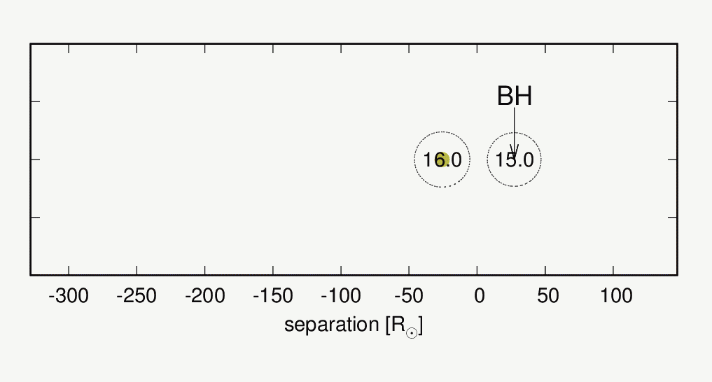
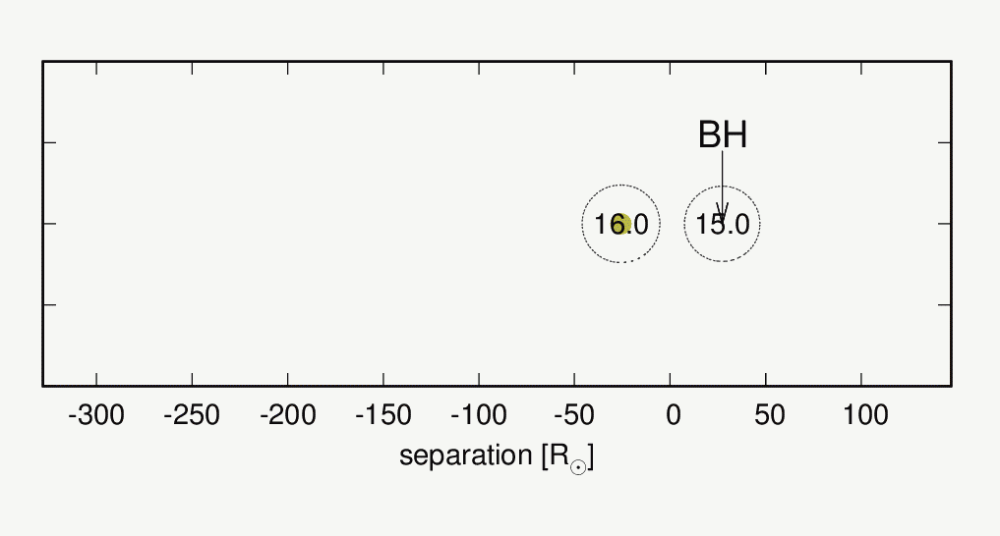

平井 遼介のホームページ
研究内容
連星系内の超新星爆発
私は主に連星系について研究しています。特に、太陽の８倍以上重い星は最後に超新星爆発を起こすことが知られていますが、そのような大質量星を含むような連星系に注目しています。これまでは超新星爆風が伴星に当たった際にどのようなことが起こるかを調べてきました。またiPTF13bvnという超新星について、爆発までにどのような進化経路を辿ったかなども調べています。
 爆風衝突効果に関する数値流体シミュレーション (Hirai et al. 2020, Hirai, Podsiadlowski & Yamada 2018, Hirai, Sawai & Yamada 2014).

爆風衝突効果に関する数値流体シミュレーション (Hirai et al. 2020, Hirai, Podsiadlowski & Yamada 2018, Hirai, Sawai & Yamada 2014).

 超新星iPTF13bvnの親星形成に関する連星進化計算 (Hirai & Yamada 2015, Hirai 2017a,Hirai 2017b).
超新星iPTF13bvnの親星形成に関する連星進化計算 (Hirai & Yamada 2015, Hirai 2017a,Hirai 2017b).
連星合体
連星系内にある星は時に合体することがあります。私は大質量星同士の合体現象について研究を行っています。特に、イータカリーナと呼ばれる特異な星の形成過程として大質量三重連星内での合体現象に注目して数値シミュレーションなどによるモデル化を行っています。
連星合体による爆発現象及びその後の超臨界恒星風による掃き集めを再現した流体シミュレーション。 (Hirai et al. 2021).
三体力学計算とN体シミュレーションを駆使したイータカリーナのOuter Ejectaの再現 (Hirai et al. 2021).
数値計算手法
宇宙物理学において定量的な研究を行う際には多かれ少なかれコンピューターを使った数値計算が不可欠になってきます。しかし、多くの場合コンピューターパワーが足りないため解像度を粗くしたり近似を行ったりして計算を行っています。私は数値計算の高速化・効率化に関する研究を行っています。特に、自己重力流体シミュレーションについては劇的な高速化に成功しました。
 我々が開発した「双曲自己重力解法」を使った星の正面衝突シミュレーション (Hirai, Nagakura, Okawa & Fujisawa 2016).
我々が開発した「双曲自己重力解法」を使った星の正面衝突シミュレーション (Hirai, Nagakura, Okawa & Fujisawa 2016).